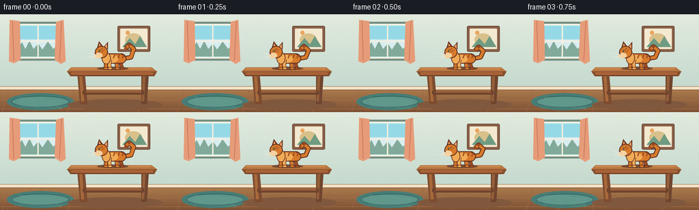
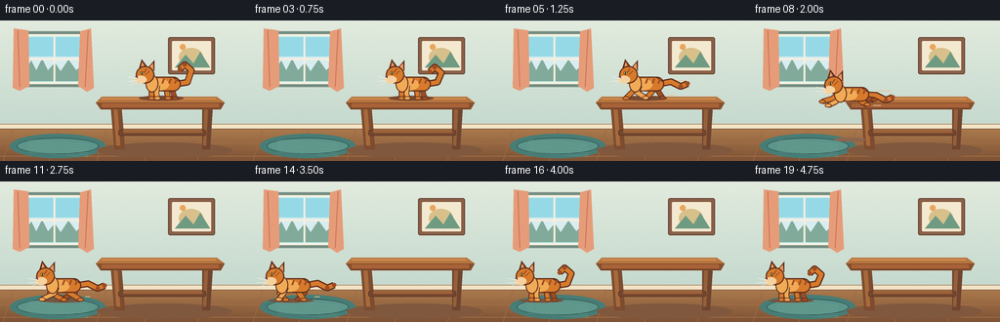

CODING AGENTS AS PIXEL WORLD MODELS
traex/GPT-5.6-Sol · dynamic_spatial_relationship_0011
点击播放 · 原生 RGB 像素
此结果可播放，但该运行尚未通过最终提交审核。页面展示不代表评测通过。
逐轮保存的候选
回放视频、检查图与代码变化。
每份候选均可单独播放。实际图片检查记录在下方工具轨迹中。
候选 01播放与检查图
点击播放 · 原生 RGB 像素


展开代码变化
--- 上一保存版本
+++ 本次保存版本
@@ -0,0 +1,314 @@
+from pathlib import Path
+import math
+import numpy as np
+from PIL import Image, ImageDraw
+import artifact_io
+
+W, H, N = 256, 144, 20
+S = 4
+rng = np.random.default_rng(11)
+
+
+def q(v):
+ return int(round(v * S))
+
+
+def box(b):
+ return tuple(q(v) for v in b)
+
+
+def points(p):
+ return [(q(x), q(y)) for x, y in p]
+
+
+def line(draw, p, fill, width=1, joint='curve'):
+ draw.line(points(p), fill=fill, width=max(1, q(width)), joint=joint)
+
+
+def ellipse(draw, b, fill, outline=None, width=1):
+ draw.ellipse(box(b), fill=fill, outline=outline, width=max(1, q(width)))
+
+
+def poly(draw, p, fill):
+ draw.polygon(points(p), fill=fill)
+
+
+def rr(draw, b, radius, fill, outline=None, width=1):
+ draw.rounded_rectangle(box(b), radius=q(radius), fill=fill, outline=outline,
+ width=max(1, q(width)))
+
+
+def make_background():
+ h, w = H*S, W*S
+ arr = np.zeros((h, w, 3), np.uint8)
+ # Soft sage wall with a warm patch of daylight.
+ for y in range(h):
+ yy = y / S
+ if yy < 108:
+ t = yy / 108
+ c = np.array([226, 235, 222]) * (1-t) + np.array([198, 218, 207]) * t
+ else:
+ t = min(1, (yy-108)/36)
+ c = np.array([175, 126, 79]) * (1-t) + np.array([126, 82, 53]) * t
+ arr[y, :, :] = c.astype(np.uint8)
+ # restrained paper / timber texture
+ noise = rng.normal(0, 1.6, (h, w, 1))
+ arr = np.clip(arr.astype(float) + noise, 0, 255).astype(np.uint8)
+ im = Image.fromarray(arr, 'RGB')
+ d = ImageDraw.Draw(im)
+
+ # Window and cast daylight at left.
+ poly(d, [(20,11),(91,11),(91,68),(20,68)], '#748d82')
+ rr(d, (23,14,88,65), 1.5, '#c5eef1', '#f7f2df', 2)
+ # sky gradient-like horizontal bands
+ d.rectangle(box((26,17,85,37)), fill='#96d9e6')
+ d.rectangle(box((26,37,85,62)), fill='#d8edf0')
+ # distant trees
+ poly(d, [(26,50),(32,41),(37,51),(43,39),(49,51),(56,43),(62,52),(70,40),(78,51),(85,44),(85,62),(26,62)], '#82aa9a')
+ line(d, [(55.5,15),(55.5,64)], '#f4efdf', 2)
+ line(d, [(24,39.5),(87,39.5)], '#f4efdf', 2)
+ # curtains
+ poly(d, [(14,8),(29,10),(30,67),(20,72),(13,69)], '#e69c78')
+ poly(d, [(93,8),(82,11),(80,67),(89,73),(96,69)], '#e69c78')
+ line(d, [(18,10),(20,68)], '#c8755b', 1)
+ line(d, [(90,10),(87,68)], '#c8755b', 1)
+
+ # A small framed print above the table.
+ rr(d, (172,17,220,55), 2, '#8a6048', '#684735', 1)
+ rr(d, (176,21,216,51), 1, '#f3e9d0')
+ ellipse(d, (183,28,208,47), '#d8c08b')
+ poly(d, [(179,48),(190,35),(198,44),(205,32),(215,48)], '#6f9b82')
+ ellipse(d, (184,24,190,30), '#eaa65d')
+
+ # Baseboard and wooden floor seams.
+ d.rectangle(box((0,106,256,111)), fill='#f3e4c7')
+ line(d, [(0,106),(256,106)], '#b69a78', 1)
+ line(d, [(0,111),(256,111)], '#8f6548', 1)
+ for x in [13, 60, 109, 158, 212]:
+ line(d, [(x,111),(x-10,144)], '#9b6845', .75)
+ for y in [126, 139]:
+ line(d, [(0,y),(256,y)], '#a26f49', .7)
+
+ # Oval woven rug on the destination (left) side.
+ ellipse(d, (10,116,108,141), '#477d76')
+ ellipse(d, (17,120,101,137), '#5d958a', '#335f5b', 1)
+ for k in range(7):
+ yy = 122 + k*2.1
+ line(d, [(28,yy),(90,yy+5)], '#72aa9a', .45)
+ return im
+
+
+BACKGROUND = make_background()
+
+
+def draw_table(im):
+ d = ImageDraw.Draw(im)
+ # Broad soft floor shadow anchors the table.
+ ellipse(d, (99,125,238,141), '#80583e')
+ # back legs
+ poly(d, [(207,85),(218,85),(215,132),(207,132)], '#70452f')
+ poly(d, [(113,85),(124,85),(128,132),(117,132)], '#7d4c30')
+ # highlights along legs
+ poly(d, [(116,88),(120,88),(123,128),(119,128)], '#a86a3b')
+ poly(d, [(209,88),(213,88),(211,128),(208,128)], '#95603a')
+ # lower stretcher
+ rr(d, (121,112,211,118), 2, '#74462e', '#5f3929', .7)
+ rr(d, (126,112,207,115), 1, '#9c6239')
+ # substantial tabletop, top plane and apron
+ poly(d, [(104,78),(222,78),(230,84),(98,84)], '#b8753f')
+ poly(d, [(98,84),(230,84),(226,91),(103,91)], '#87502f')
+ line(d, [(104,80),(221,80)], '#dc9a59', 1)
+ rr(d, (104,85,224,89), 1, '#a96337')
+ # front corner glints
+ line(d, [(103,90),(224,90)], '#683b29', .7)
+
+
+def cat_shadow(im, cx, foot, airborne=False, table=False):
+ d = ImageDraw.Draw(im)
+ if table:
+ ellipse(d, (cx-23,77,cx+23,82), '#764b32')
+ else:
+ altitude = max(0, 121-foot)
+ half = max(10, 23-altitude*.22)
+ shade = '#775541' if not airborne else '#8c664f'
+ ellipse(d, (cx-half,120,cx+half,124), shade)
+
+
+def limb(draw, pts, color, outline='#71341f', width=4.7):
+ line(draw, pts, outline, width+1.8)
+ line(draw, pts, color, width)
+ x,y = pts[-1]
+ ellipse(draw, (x-3.4,y-2.0,x+3.5,y+2.1), color, outline, .8)
+
+
+def draw_cat(im, cx, foot, pose, phase=0.0, tail_phase=0.0):
+ d = ImageDraw.Draw(im)
+ outline = '#62301f'
+ orange = '#d77a2b'
+ light = '#f1aa55'
+ dark = '#9d4d24'
+ cream = '#f4d2a0'
+
+ crouch = pose == 'crouch'
+ airborne = pose == 'air'
+ stopped = pose == 'stop'
+ body_top = foot-22 if not crouch else foot-16
+ body_bot = foot-7 if not crouch else foot-3
+ body_cy = (body_top+body_bot)/2
+
+ # Tail behind the body, with expressive curl / directional sweep.
+ if pose in ('stand','stop','crouch'):
+ flick = math.sin(tail_phase)*3
+ tail_pts = [(cx+15,body_cy),(cx+27,body_cy-2),(cx+31,body_cy-14+flick),
+ (cx+24,body_cy-20+flick),(cx+19,body_cy-15+flick)]
+ else:
+ flick = math.sin(tail_phase)*2
+ tail_pts = [(cx+14,body_cy),(cx+27,body_cy-1+flick),(cx+37,body_cy+4+flick),(cx+44,body_cy+1+flick)]
+ line(d, tail_pts, outline, 7)
+ line(d, tail_pts, orange, 4.6)
+ # tail stripes
+ for k in (1,2):
+ idx = -k
+ x,y = tail_pts[idx]
+ ellipse(d, (x-2.2,y-2.3,x+2.2,y+2.3), dark)
+
+ # Rear legs, under the torso.
+ if airborne:
+ limb(d, [(cx+10,foot-15),(cx+18,foot-10),(cx+25,foot-9)], dark, outline, 4.1)
+ limb(d, [(cx+5,foot-14),(cx+12,foot-7),(cx+18,foot-4)], orange, outline, 4.3)
+ elif crouch:
+ limb(d, [(cx+11,foot-10),(cx+16,foot-4),(cx+20,foot-1)], dark, outline, 4.2)
+ elif pose == 'run':
+ sw = math.sin(phase)
+ bx = cx + 10
+ limb(d, [(bx,foot-13),(bx+4,foot-7),(bx+10*sw,foot-.5)], dark, outline, 4.0)
+ limb(d, [(bx-5,foot-12),(bx-2,foot-7),(bx-10*sw,foot)], orange, outline, 4.2)
+ else:
+ limb(d, [(cx+11,foot-13),(cx+12,foot-6),(cx+14,foot)], dark, outline, 4.0)
+ limb(d, [(cx+5,foot-12),(cx+6,foot-5),(cx+7,foot)], orange, outline, 4.0)
+
+ # Torso with chest highlight.
+ rr(d, (cx-15,body_top,cx+20,body_bot), 8, orange, outline, 1.35)
+ ellipse(d, (cx-11,body_top+2,cx+8,body_bot-1), light)
+ # top contour restores clean outline after highlight
+ line(d, [(cx-10,body_top+.8),(cx+12,body_top+.4),(cx+19,body_top+5)], outline, 1.0)
+ # Tabby stripes on torso
+ for ox in (3,10,16):
+ line(d, [(cx+ox,body_top+2),(cx+ox-2,body_top+7)], dark, 1.7)
+
+ # Front legs emerge from chest.
+ if airborne:
+ limb(d, [(cx-9,foot-16),(cx-18,foot-10),(cx-28,foot-7)], orange, outline, 4.1)
+ limb(d, [(cx-6,foot-14),(cx-14,foot-7),(cx-22,foot-3)], light, outline, 4.0)
+ elif crouch:
+ limb(d, [(cx-8,foot-9),(cx-14,foot-4),(cx-21,foot-1)], light, outline, 4.1)
+ elif pose == 'run':
+ sw = math.sin(phase)
+ fx = cx-9
+ limb(d, [(fx,foot-14),(fx-3,foot-7),(fx-12*sw,foot)], orange, outline, 4.0)
+ limb(d, [(fx+4,foot-13),(fx+1,foot-6),(fx+12*sw,foot-.4)], light, outline, 4.0)
+ else:
+ limb(d, [(cx-8,foot-14),(cx-10,foot-6),(cx-10,foot)], orange, outline, 4.0)
+ limb(d, [(cx-4,foot-13),(cx-5,foot-5),(cx-4,foot)], light, outline, 4.0)
+
+ # Neck ruff behind head.
+ ellipse(d, (cx-16,body_top-2,cx-3,body_bot+1), light, outline, 1)
+
+ # Head at the left: triangular ears make the silhouette unmistakable.
+ hy = body_top-1 if not crouch else body_top+1
+ poly(d, [(cx-23,hy-7),(cx-20,hy-17),(cx-14,hy-9)], outline)
+ poly(d, [(cx-13,hy-9),(cx-7,hy-16),(cx-7,hy-5)], outline)
+ poly(d, [(cx-21,hy-8),(cx-19.5,hy-14),(cx-16,hy-8)], '#e99a61')
+ poly(d, [(cx-12,hy-9),(cx-8.5,hy-13),(cx-8,hy-6)], '#e99a61')
+ ellipse(d, (cx-26,hy-10,cx-7,hy+8), orange, outline, 1.25)
+ # muzzle and chin
+ ellipse(d, (cx-27,hy+0,cx-15,hy+8), cream)
+ # eye, nose
+ ellipse(d, (cx-21.5,hy-4.5,cx-18.0,hy-1), '#f6df6b', outline, .55)
+ ellipse(d, (cx-20.3,hy-4.1,cx-19.2,hy-1.2), '#18211e')
+ poly(d, [(cx-27,hy+1),(cx-24.5,hy+.1),(cx-24.2,hy+2.5)], '#6b3040')
+ # cheek stripes and whiskers
+ line(d, [(cx-15,hy-7),(cx-18,hy-3)], dark, 1.2)
+ line(d, [(cx-12,hy-5),(cx-16,hy-1)], dark, 1.2)
+ line(d, [(cx-25,hy+3),(cx-34,hy+1)], '#f8eee0', .65)
+ line(d, [(cx-25,hy+5),(cx-35,hy+6)], '#f8eee0', .65)
+ line(d, [(cx-24,hy+6),(cx-32,hy+10)], '#f8eee0', .55)
+
+
+def motion_accents(im, cx, foot, strength=1.0):
+ d = ImageDraw.Draw(im)
+ col = '#e8c69d'
+ # Speed streaks trail to the right because movement is leftward.
+ for j, (dx,dy,L) in enumerate([(28,-18,14),(34,-10,10),(24,-3,8)]):
+ line(d, [(cx+dx,foot+dy),(cx+dx+L*strength,foot+dy)], col, max(.45,1.1-j*.2))
+
+
+def dust(im, cx, y, amount):
+ d = ImageDraw.Draw(im)
+ for k in range(amount):
+ ang = .45 + k*.7
+ r = 4 + k*2
+ x = cx + math.cos(ang)*r
+ yy = y - abs(math.sin(ang))*r*.55
+ ellipse(d, (x-1.8,yy-1.4,x+1.8,yy+1.4), '#d9b88c')
+
+
+def frame_params(i):
+ # Opening hold establishes "cat on the table" before the action.
+ if i <= 3:
+ return 165.0, 79.5, 'stand', i*0.7
+ if i == 4:
+ return 159.0, 80.0, 'crouch', 3.0
+ if i == 5:
+ return 148.0, 79.5, 'run', 4.0
+ if i == 6:
+ return 134.0, 79.5, 'run', 6.1
+ if i == 7:
+ return 119.0, 81.5, 'air', 7.0
+ if i == 8:
+ return 102.0, 90.0, 'air', 8.0
+ if i == 9:
+ return 85.0, 104.0, 'air', 9.0
+ if i == 10:
+ return 73.0, 121.0, 'run', 10.0
+ if i == 11:
+ return 63.0, 121.0, 'run', 12.0
+ if i == 12:
+ return 54.0, 121.0, 'run', 14.0
+ if i == 13:
+ return 47.0, 121.0, 'run', 16.0
+ if i == 14:
+ return 42.0, 121.0, 'run', 18.0
+ if i == 15:
+ return 40.0, 121.0, 'crouch', 19.0
+ # Final hold clearly establishes cat entirely left of table.
+ return 42.0, 121.0, 'stop', 19.0 + (i-15)*.45
+
+
+def render(i):
+ im = BACKGROUND.copy()
+ draw_table(im)
+ cx, foot, pose, tph = frame_params(i)
+ on_table = i <= 6
+ cat_shadow(im, cx, foot, airborne=(pose=='air'), table=on_table)
+ if 5 <= i <= 14:
+ motion_accents(im, cx, foot, 1.0 if i < 11 else .65)
+ if i in (10,11):
+ dust(im, cx+12, 121, 4 if i==10 else 2)
+ phase = i * 2.65 + .3
+ draw_cat(im, cx, foot, pose, phase, tph)
+ # Tiny foreground floor flecks add depth without distracting.
+ d = ImageDraw.Draw(im)
+ for x in (7,95,240):
+ line(d, [(x,137),(x+5,136.5)], '#6f4a37', .45)
+ return np.asarray(im.resize((W,H), Image.Resampling.LANCZOS), dtype=np.uint8)
+
+
+def main():
+ frames = np.stack([render(i) for i in range(N)], axis=0)
+ assert frames.shape == (20,144,256,3) and frames.dtype == np.uint8
+ artifact_io.save(frames, Path(__file__).resolve().parent)
+
+
+if __name__ == '__main__':
+ main()
可观测工具轨迹
实际执行的命令与返回图片。
命令 1exit 0
/bin/bash -lc "cat prompt.txt && printf '\\n---RULES---\\n' && cat GENERATION_RULES.md && printf '\\n---SPEC---\\n' && cat task_spec.json"
命令 2exit 0
/bin/bash -lc "find . -maxdepth 2 -type f -printf '%p %s bytes\\n' | sort"
命令 3exit 0
/bin/bash -lc "which ffmpeg; which python3; python3 - <<'PY'
try:
import cv2; print('cv2',cv2.__version__)
except Exception as e: print('no cv2',e)
try:
from PIL import Image; print('PIL yes')
except Exception as e: print('no PIL',e)
PY"命令 4exit 0
/bin/bash -lc 'cat artifact_io.py'
命令 5exit 0
/bin/bash -lc "cat > generate.py <<'PY'
from pathlib import Path
import math
import numpy as np
from PIL import Image, ImageDraw
import artifact_io
W, H, N = 256, 144, 20
S = 4
rng = np.random.default_rng(11)
def q(v):
return int(round(v * S))
def box(b):
return tuple(q(v) for v in b)
def points(p):
return [(q(x), q(y)) for x, y in p]
def line(draw, p, fill, width=1, joint='curve'):
draw.line(points(p), fill=fill, width=max(1, q(width)), joint=joint)
def ellipse(draw, b, fill, outline=None, width=1):
draw.ellipse(box(b), fill=fill, outline=outline, width=max(1, q(width)))
def poly(draw, p, fill):
draw.polygon(points(p), fill=fill)
def rr(draw, b, radius, fill, outline=None, width=1):
draw.rounded_rectangle(box(b), radius=q(radius), fill=fill, outline=outline,
width=max(1, q(width)))
def make_background():
h, w = H*S, W*S
arr = np.zeros((h, w, 3), np.uint8)
# Soft sage wall with a warm patch of daylight.
for y in range(h):
yy = y / S
if yy < 108:
t = yy / 108
c = np.array([226, 235, 222]) * (1-t) + np.array([198, 218, 207]) * t
else:
t = min(1, (yy-108)/36)
c = np.array([175, 126, 79]) * (1-t) + np.array([126, 82, 53]) * t
arr[y, :, :] = c.astype(np.uint8)
# restrained paper / timber texture
noise = rng.normal(0, 1.6, (h, w, 1))
arr = np.clip(arr.astype(float) + noise, 0, 255).astype(np.uint8)
im = Image.fromarray(arr, 'RGB')
d = ImageDraw.Draw(im)
# Window and cast daylight at left.
poly(d, [(20,11),(91,11),(91,68),(20,68)], '#748d82')
rr(d, (23,14,88,65), 1.5, '#c5eef1', '#f7f2df', 2)
# sky gradient-like horizontal bands
d.rectangle(box((26,17,85,37)), fill='#96d9e6')
d.rectangle(box((26,37,85,62)), fill='#d8edf0')
# distant trees
poly(d, [(26,50),(32,41),(37,51),(43,39),(49,51),(56,43),(62,52),(70,40),(78,51),(85,44),(85,62),(26,62)], '#82aa9a')
line(d, [(55.5,15),(55.5,64)], '#f4efdf', 2)
line(d, [(24,39.5),(87,39.5)], '#f4efdf', 2)
# curtains
poly(d, [(14,8),(29,10),(30,67),(20,72),(13,69)], '#e69c78')
poly(d, [(93,8),(82,11),(80,67),(89,73),(96,69)], '#e69c78')
line(d, [(18,10),(20,68)], '#c8755b', 1)
line(d, [(90,10),(87,68)], '#c8755b', 1)
# A small framed print above the table.
rr(d, (172,17,220,55), 2, '#8a6048', '#684735', 1)
rr(d, (176,21,216,51), 1, '#f3e9d0')
ellipse(d, (183,28,208,47), '#d8c08b')
poly(d, [(179,48),(190,35),(198,44),(205,32),(215,48)], '#6f9b82')
ellipse(d, (184,24,190,30), '#eaa65d')
# Baseboard and wooden floor seams.
d.rectangle(box((0,106,256,111)), fill='#f3e4c7')
line(d, [(0,106),(256,106)], '#b69a78', 1)
line(d, [(0,111),(256,111)], '#8f6548', 1)
for x in [13, 60, 109, 158, 212]:
line(d, [(x,111),(x-10,144)], '#9b6845', .75)
for y in [126, 139]:
line(d, [(0,y),(256,y)], '#a26f49', .7)
# Oval woven rug on the destination (left) side.
ellipse(d, (10,116,108,141), '#477d76')
ellipse(d, (17,120,101,137), '#5d958a', '#335f5b', 1)
for k in range(7):
yy = 122 + k*2.1
line(d, [(28,yy),(90,yy+5)], '#72aa9a', .45)
return im
BACKGROUND = make_background()
def draw_table(im):
d = ImageDraw.Draw(im)
# Broad soft floor shadow anchors the table.
ellipse(d, (99,125,238,141), '#80583e')
# back legs
poly(d, [(207,85),(218,85),(215,132),(207,132)], '#70452f')
poly(d, [(113,85),(124,85),(128,132),(117,132)], '#7d4c30')
# highlights along legs
poly(d, [(116,88),(120,88),(123,128),(119,128)], '#a86a3b')
poly(d, [(209,88),(213,88),(211,128),(208,128)], '#95603a')
# lower stretcher
rr(d, (121,112,211,118), 2, '#74462e', '#5f3929', .7)
rr(d, (126,112,207,115), 1, '#9c6239')
# substantial tabletop, top plane and apron
poly(d, [(104,78),(222,78),(230,84),(98,84)], '#b8753f')
poly(d, [(98,84),(230,84),(226,91),(103,91)], '#87502f')
line(d, [(104,80),(221,80)], '#dc9a59', 1)
rr(d, (104,85,224,89), 1, '#a96337')
# front corner glints
line(d, [(103,90),(224,90)], '#683b29', .7)
def cat_shadow(im, cx, foot, airborne=False, table=False):
d = ImageDraw.Draw(im)
if table:
ellipse(d, (cx-23,77,cx+23,82), '#764b32')
else:
altitude = max(0, 121-foot)
half = max(10, 23-altitude*.22)
shade = '#775541' if not airborne else '#8c664f'
ellipse(d, (cx-half,120,cx+half,124), shade)
def limb(draw, pts, color, outline='#71341f', width=4.7):
line(draw, pts, outline, width+1.8)
line(draw, pts, color, width)
x,y = pts[-1]
ellipse(draw, (x-3.4,y-2.0,x+3.5,y+2.1), color, outline, .8)
def draw_cat(im, cx, foot, pose, phase=0.0, tail_phase=0.0):
d = ImageDraw.Draw(im)
outline = '#62301f'
orange = '#d77a2b'
light = '#f1aa55'
dark = '#9d4d24'
cream = '#f4d2a0'
crouch = pose == 'crouch'
airborne = pose == 'air'
stopped = pose == 'stop'
body_top = foot-22 if not crouch else foot-16
body_bot = foot-7 if not crouch else foot-3
body_cy = (body_top+body_bot)/2
# Tail behind the body, with expressive curl / directional sweep.
if pose in ('stand','stop','crouch'):
flick = math.sin(tail_phase)*3
tail_pts = [(cx+15,body_cy),(cx+27,body_cy-2),(cx+31,body_cy-14+flick),
(cx+24,body_cy-20+flick),(cx+19,body_cy-15+flick)]
else:
flick = math.sin(tail_phase)*2
tail_pts = [(cx+14,body_cy),(cx+27,body_cy-1+flick),(cx+37,body_cy+4+flick),(cx+44,body_cy+1+flick)]
line(d, tail_pts, outline, 7)
line(d, tail_pts, orange, 4.6)
# tail stripes
for k in (1,2):
idx = -k
x,y = tail_pts[idx]
ellipse(d, (x-2.2,y-2.3,x+2.2,y+2.3), dark)
# Rear legs, under the torso.
if airborne:
limb(d, [(cx+10,foot-15),(cx+18,foot-10),(cx+25,foot-9)], dark, outline, 4.1)
limb(d, [(cx+5,foot-14),(cx+12,foot-7),(cx+18,foot-4)], orange, outline, 4.3)
elif crouch:
limb(d, [(cx+11,foot-10),(cx+16,foot-4),(cx+20,foot-1)], dark, outline, 4.2)
elif pose == 'run':
sw = math.sin(phase)
bx = cx + 10
limb(d, [(bx,foot-13),(bx+4,foot-7),(bx+10*sw,foot-.5)], dark, outline, 4.0)
limb(d, [(bx-5,foot-12),(bx-2,foot-7),(bx-10*sw,foot)], orange, outline, 4.2)
else:
limb(d, [(cx+11,foot-13),(cx+12,foot-6),(cx+14,foot)], dark, outline, 4.0)
limb(d, [(cx+5,foot-12),(cx+6,foot-5),(cx+7,foot)], orange, outline, 4.0)
# Torso with chest highlight.
rr(d, (cx-15,body_top,cx+20,body_bot), 8, orange, outline, 1.35)
ellipse(d, (cx-11,body_top+2,cx+8,body_bot-1), light)
# top contour restores clean outline after highlight
line(d, [(cx-10,body_top+.8),(cx+12,body_top+.4),(cx+19,body_top+5)], outline, 1.0)
# Tabby stripes on torso
for ox in (3,10,16):
line(d, [(cx+ox,body_top+2),(cx+ox-2,body_top+7)], dark, 1.7)
# Front legs emerge from chest.
if airborne:
limb(d, [(cx-9,foot-16),(cx-18,foot-10),(cx-28,foot-7)], orange, outline, 4.1)
limb(d, [(cx-6,foot-14),(cx-14,foot-7),(cx-22,foot-3)], light, outline, 4.0)
elif crouch:
limb(d, [(cx-8,foot-9),(cx-14,foot-4),(cx-21,foot-1)], light, outline, 4.1)
elif pose == 'run':
sw = math.sin(phase)
fx = cx-9
limb(d, [(fx,foot-14),(fx-3,foot-7),(fx-12*sw,foot)], orange, outline, 4.0)
limb(d, [(fx+4,foot-13),(fx+1,foot-6),(fx+12*sw,foot-.4)], light, outline, 4.0)
else:
limb(d, [(cx-8,foot-14),(cx-10,foot-6),(cx-10,foot)], orange, outline, 4.0)
limb(d, [(cx-4,foot-13),(cx-5,foot-5),(cx-4,foot)], light, outline, 4.0)
# Neck ruff behind head.
ellipse(d, (cx-16,body_top-2,cx-3,body_bot+1), light, outline, 1)
# Head at the left: triangular ears make the silhouette unmistakable.
hy = body_top-1 if not crouch else body_top+1
poly(d, [(cx-23,hy-7),(cx-20,hy-17),(cx-14,hy-9)], outline)
poly(d, [(cx-13,hy-9),(cx-7,hy-16),(cx-7,hy-5)], outline)
poly(d, [(cx-21,hy-8),(cx-19.5,hy-14),(cx-16,hy-8)], '#e99a61')
poly(d, [(cx-12,hy-9),(cx-8.5,hy-13),(cx-8,hy-6)], '#e99a61')
ellipse(d, (cx-26,hy-10,cx-7,hy+8), orange, outline, 1.25)
# muzzle and chin
ellipse(d, (cx-27,hy+0,cx-15,hy+8), cream)
# eye, nose
ellipse(d, (cx-21.5,hy-4.5,cx-18.0,hy-1), '#f6df6b', outline, .55)
ellipse(d, (cx-20.3,hy-4.1,cx-19.2,hy-1.2), '#18211e')
poly(d, [(cx-27,hy+1),(cx-24.5,hy+.1),(cx-24.2,hy+2.5)], '#6b3040')
# cheek stripes and whiskers
line(d, [(cx-15,hy-7),(cx-18,hy-3)], dark, 1.2)
line(d, [(cx-12,hy-5),(cx-16,hy-1)], dark, 1.2)
line(d, [(cx-25,hy+3),(cx-34,hy+1)], '#f8eee0', .65)
line(d, [(cx-25,hy+5),(cx-35,hy+6)], '#f8eee0', .65)
line(d, [(cx-24,hy+6),(cx-32,hy+10)], '#f8eee0', .55)
def motion_accents(im, cx, foot, strength=1.0):
d = ImageDraw.Draw(im)
col = '#e8c69d'
# Speed streaks trail to the right because movement is leftward.
for j, (dx,dy,L) in enumerate([(28,-18,14),(34,-10,10),(24,-3,8)]):
line(d, [(cx+dx,foot+dy),(cx+dx+L*strength,foot+dy)], col, max(.45,1.1-j*.2))
def dust(im, cx, y, amount):
d = ImageDraw.Draw(im)
for k in range(amount):
ang = .45 + k*.7
r = 4 + k*2
x = cx + math.cos(ang)*r
yy = y - abs(math.sin(ang))*r*.55
ellipse(d, (x-1.8,yy-1.4,x+1.8,yy+1.4), '#d9b88c')
def frame_params(i):
# Opening hold establishes \"cat on the table\" before the action.
if i <= 3:
return 165.0, 79.5, 'stand', i*0.7
if i == 4:
return 159.0, 80.0, 'crouch', 3.0
if i == 5:
return 148.0, 79.5, 'run', 4.0
if i == 6:
return 134.0, 79.5, 'run', 6.1
if i == 7:
return 119.0, 81.5, 'air', 7.0
if i == 8:
return 102.0, 90.0, 'air', 8.0
if i == 9:
return 85.0, 104.0, 'air', 9.0
if i == 10:
return 73.0, 121.0, 'run', 10.0
if i == 11:
return 63.0, 121.0, 'run', 12.0
if i == 12:
return 54.0, 121.0, 'run', 14.0
if i == 13:
return 47.0, 121.0, 'run', 16.0
if i == 14:
return 42.0, 121.0, 'run', 18.0
if i == 15:
return 40.0, 121.0, 'crouch', 19.0
# Final hold clearly establishes cat entirely left of table.
return 42.0, 121.0, 'stop', 19.0 + (i-15)*.45
def render(i):
im = BACKGROUND.copy()
draw_table(im)
cx, foot, pose, tph = frame_params(i)
on_table = i <= 6
cat_shadow(im, cx, foot, airborne=(pose=='air'), table=on_table)
if 5 <= i <= 14:
motion_accents(im, cx, foot, 1.0 if i < 11 else .65)
if i in (10,11):
dust(im, cx+12, 121, 4 if i==10 else 2)
phase = i * 2.65 + .3
draw_cat(im, cx, foot, pose, phase, tph)
# Tiny foreground floor flecks add depth without distracting.
d = ImageDraw.Draw(im)
for x in (7,95,240):
line(d, [(x,137),(x+5,136.5)], '#6f4a37', .45)
return np.asarray(im.resize((W,H), Image.Resampling.LANCZOS), dtype=np.uint8)
def main():
frames = np.stack([render(i) for i in range(N)], axis=0)
assert frames.shape == (20,144,256,3) and frames.dtype == np.uint8
artifact_io.save(frames, Path(__file__).resolve().parent)
if __name__ == '__main__':
main()
PY
python3 generate.py
ls -lh pixels.npz inspection.png index.html frames/00.png frames/19.png"视觉工具实际返回图片 1

保存候选 1 份；完成命令 5 次；可验证图片返回 1 张。原始 API 响应与完整日志保留在本地。